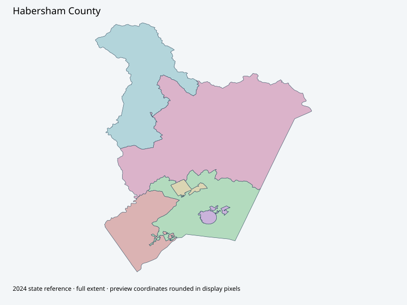

Map index · 6 explicit-FIPS 2024 map rows; 6 historical result identities. No approved crosswalk.

Full native coordinate/attribute extraction (gzip JSON) · Original complete statewide ZIP
Official polling-locations page distinguishes Habersham North/South from city-only precincts. Complete2024 state geometry retained without collapsing native ballot/reporting identities into those polling places. November geometry/crosswalk unverified.
Full objects, county source IDs/clocks and attributes: all 2,701 native contexts. isVirtual:false and source label precinct do not prove physical geometry.
| Source name | Full source GUID | Breakdown ordinal | Source | Map status |
|---|---|---|---|---|
| Habersham North | 01000000-d884-2e72-fa61-08dcda4bc36d | 0 | 2024NovGen--habersham-county-ga | unreviewed / no approved map join |
| Habersham South | 01000000-d884-2e72-099e-08dcda4bc379 | 1 | 2024NovGen--habersham-county-ga | unreviewed / no approved map join |
| Demorest | 01000000-d884-2e72-7f49-08dcda4bc383 | 2 | 2024NovGen--habersham-county-ga | unreviewed / no approved map join |
| Mount Airy | 01000000-d884-2e72-fd93-08dcda4bc38d | 3 | 2024NovGen--habersham-county-ga | unreviewed / no approved map join |
| Mud Creek | 01000000-d884-2e72-7825-08dcda4bc398 | 4 | 2024NovGen--habersham-county-ga | unreviewed / no approved map join |
| Amys Creek | 01000000-d884-2e72-32a0-08dcda4bc3a3 | 5 | 2024NovGen--habersham-county-ga | unreviewed / no approved map join |
| Original row ordinal | DISTRICT | PRECINCT_I | PRECINCT_N |
|---|---|---|---|
| 114 | 1376 | 6 | MUD CREEK |
| 115 | 1372 | 2 | HABERSHAM SOUTH |
| 116 | 1374 | 4 | TOWN OF MOUNT AIRY |
| 117 | 1373 | 3 | DEMOREST |
| 1391 | 1377 | 7 | AMYS CREEK |
| 1392 | 1371 | 1 | HABERSHAM NORTH |